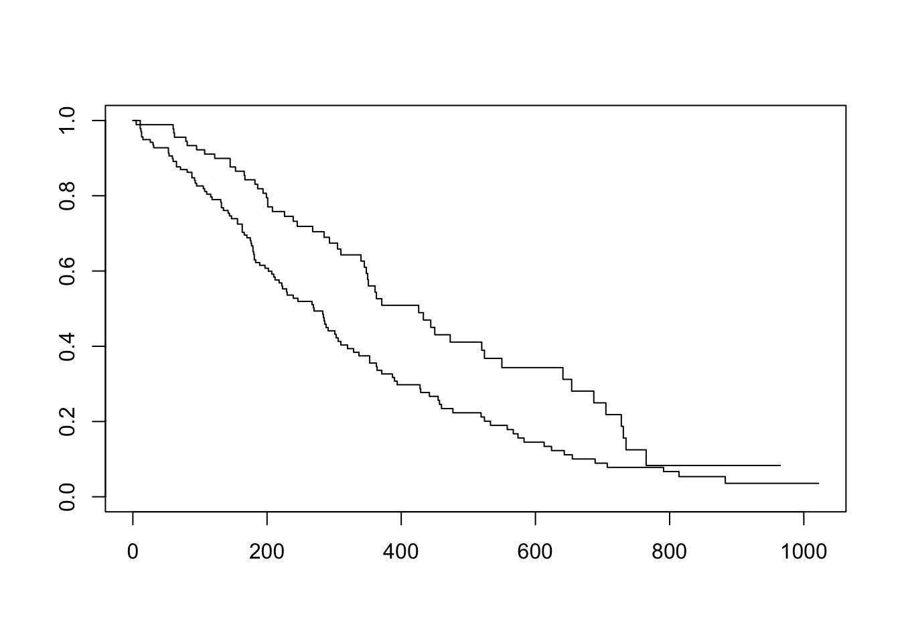
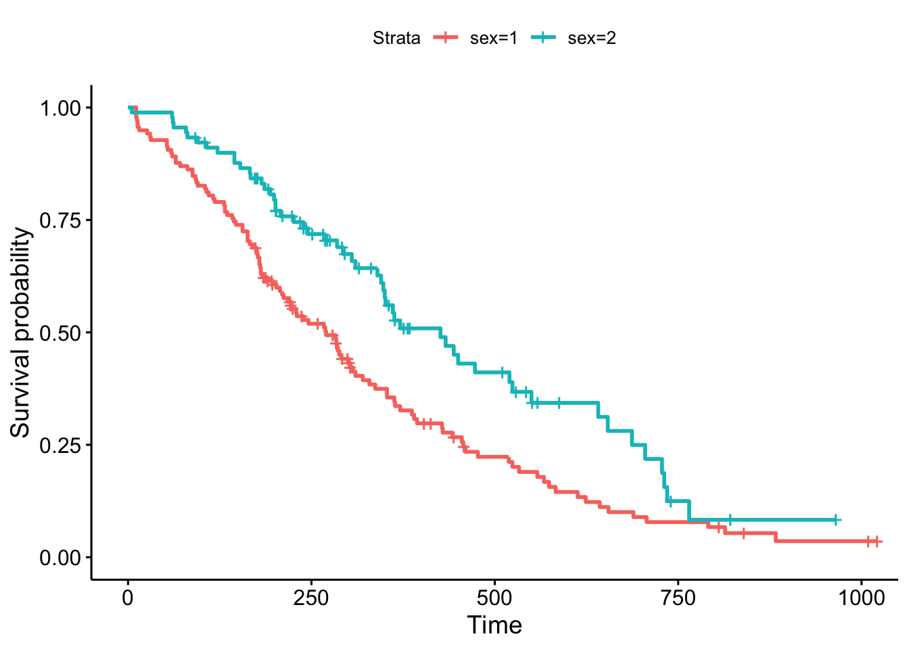
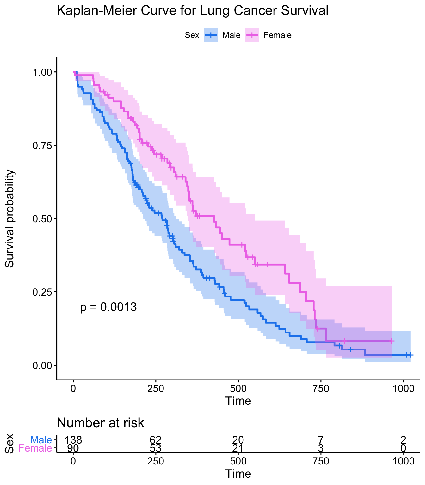
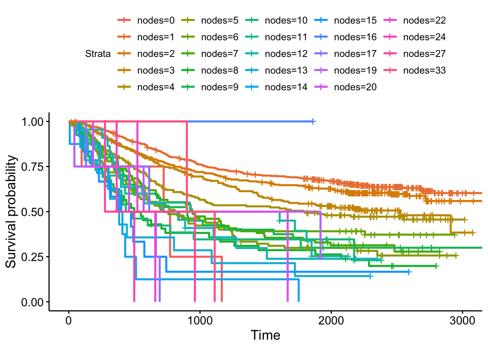
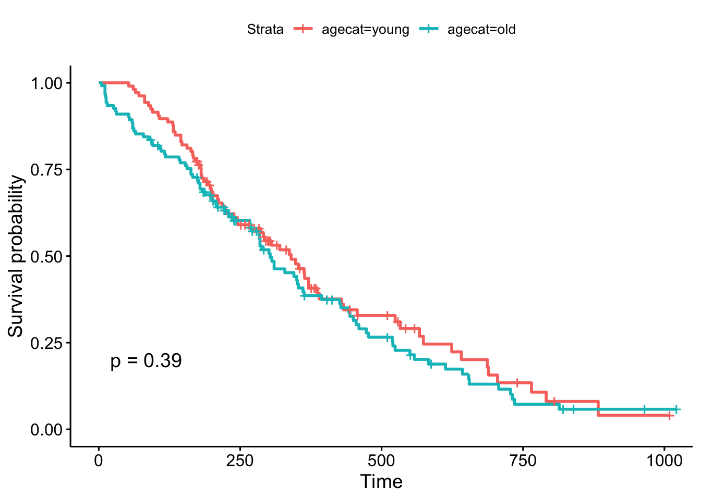
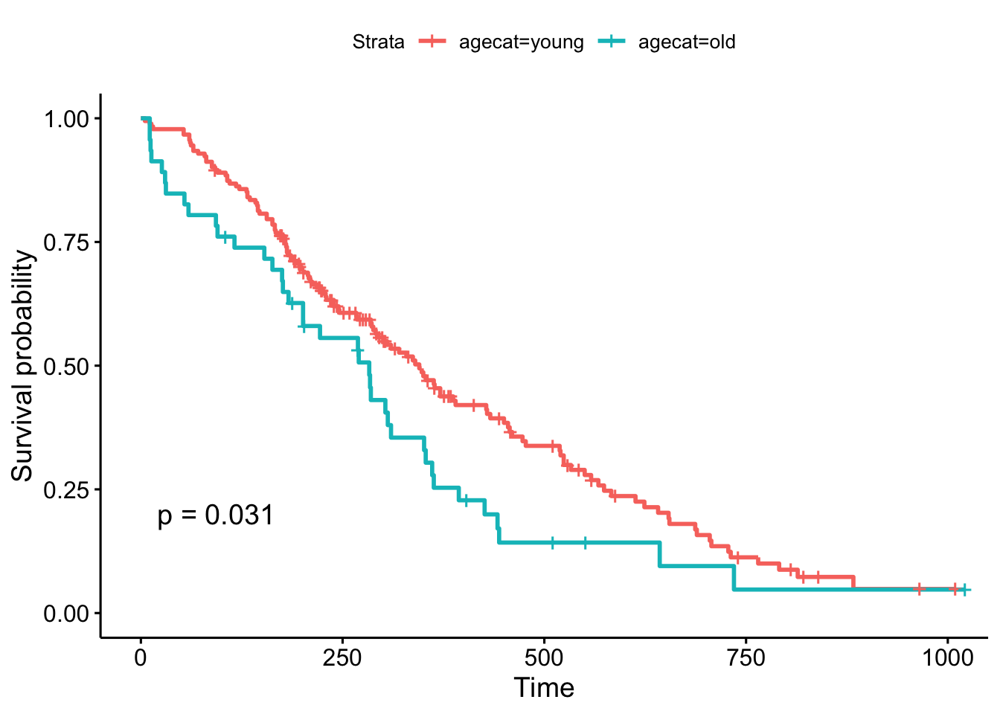

使用 R 进行生存分析
王诗翔 · 2018-04-28
学习生存分析预先要求对R有所了解，基本能够操作R数据框和包的使用。要是懂ggplot2和dplyr就更好了。
资料
背景
在纵向研究中，我们需要从一个时间点追踪样本或受试者（例如，进入研究，诊断，开始治疗），直到我们观察到一些结果事件（例如死亡，疾病发作，复发），但不会有意义的假设改变的速率是不变的。例如：手术后心脏手术后的死亡风险最高，术后恢复的患者死亡风险缓慢降低，随着患者年龄的增长，风险再次缓慢上升。或者，不同癌症的复发率随时间变化很大，并且取决于肿瘤遗传学，治疗和其他环境因素。
定义
生存分析可让我们分析事件发生的速率，而不会假设速率不变。一般而言，生存分析可以让我们对事件发生之前的时间进行建模1或比较不同组之间的事件时间，或者事件时间与定量变量之间的相关性。
风险是特定时间点t的瞬时事件发生（死亡）率。生存分析并不认为随着时间的推移危害是不变的。累积风险是直到时间t为止经历的总风险。生存函数是个体在时间t之前存在的概率（或者，不发生感兴趣事件的概率）。这是事件（例如，死亡）尚未发生的可能性。看起来像这样，其中\(T\)是死亡时间，\(Pr(T> t)\)是死亡时间大于某个时间\(t\)的概率。\(S\)是概率，所以\(0\leq S(t)\leq 1\)，因为生存期总是正值（\(T \geq 0\)）。
\[ S(t) = Pr(T>t) \]
Kaplan-Meier曲线描述了生存函数。这是一个阶梯函数，说明随着时间的推移累计生存概率。曲线在没有事件发生的时间段内是水平的，然后垂直下降，对应于每次发生事件时生存函数的变化。截尾是一种生存分析特有的缺失数据问题。 当我们在研究结束时跟踪样本/主题并且事件从未发生时会发生这种情况。这也可能是由于样本/受试者因死亡以外的原因而退出研究或其他一些失访导致的。样本数据发生截尾是因为你只知道这个人存活到失去跟踪为止，但你不知道任何关于之后他的生存状态2。
比例风险假设：生存分析的主要目标是比较不同组别（例如白血病患者与正常对照组）的生存功能。如果两组人都死亡，那么两条生存曲线都将结束于0％，但是其中一组的平均存活时间可能比另一组长。生存分析通过比较观察期间不同时间的风险来做到这一点。生存分析并不假设危害是恒定的，但确实假定组间危害的比率随着时间的推移是恒定的。3本文不包括处理非比例风险的方法或伴随时间到事件的协变量交互作用。
比例风险回归也称为Cox回归，是评估不同变量对生存率影响的最常用方法。
Cox PH模型
Kaplan-Meier曲线适用于观察两个分类组4之间生存率的差异，但对于评估诸如年龄，基因表达，白细胞计数等定量变量的影响，它们不起作用。Cox PH回归可评估分类变量和连续变量的影响，并且可以一次模拟多个变量的影响。
Cox PH回归模型将时间t处的风险自然对数表示为\(h(t)\)，作为基线危险（\(h_0(t)\)）的函数（所有暴露变量为0的个体的风险）和多个暴露变量\(x_1\)，\(x_1\)，\(...\)，\(x_p\)。 Cox PH模型的形式是：
\[ log(h(t)) = log(h_0(t)) + \beta_1 x_1 + \beta_2 x_2 + ... + \beta_p x_p \]
如果对方程的两边进行幂运算，并将右边限制为仅包含两个组（\(x_1 = 1\)作为暴露变量，\(x_1 = 0\)作为非暴露变量）的单个分类暴露变量（$ x_1 $），则等式变为：
\[ h_1(t) = h_0(t) \times e^{\beta_1 x_1} \]
重新排列该等式可以估计风险比率，比较时间t暴露对于未暴露个体：
\[ HR(t) = \frac{h_1(t)}{h_0(t)} = e^{\beta_1} \]
该模型显示风险比为\(e^{\beta_1}\)，并且在时间t内保持不变（因此名称比例风险回归）。\(\beta\)值是根据模型估计的回归系数，并表示相应预测变量中每单位增加的\(log(Hazard,Ratio)\)。危害比的解释取决于预测变量的测量尺度，但简单地说，正系数表示较差的存活率，负系数表示所讨论的变量存活率较高。
用R进行生存分析
核心的分析函数都在survival包里，我们这里使用dplyr包，然后用survminer包进行绘图。
# 确保在导入前安装好
library(survival)
library(dplyr)
library(survminer)我们将使用的核心函数包括：
Surv()：创建一个生存对象survfit()：使用公式或已构建的Cox模型拟合生存曲线coxph()：拟合Cox比例风险回归模型
其他我们可能会用到的函数：
cox.zph()：检验一个Cox回归模型的比例风险假设survdiff()：用log-rank/Mantel-Haenszel检验检验生存差异5
Surv()创建响应变量，典型用法是使用事件时间，6以及事件是否发生（即死亡与截尾）。survfit()创建一条生存曲线，然后可以显示或绘图。coxph()实现回归分析，并且模型以与常规线性模型中相同的方式指定，但使用coxph()函数。
开始
我们将使用内置的肺癌数据集7学习使用survival包。你可以通过运行?lung获取数据集信息：
library(survival)
?lunginst: Institution codetime: Survival time in daysstatus: censoring status 1=censored, 2=deadage: Age in yearssex: Male=1 Female=2ph.ecog: ECOG performance score (0=good 5=dead)ph.karno: Karnofsky performance score as rated by physicianpat.karno: Karnofsky performance score as rated by patientmeal.cal: Calories consumed at mealswt.loss: Weight loss in last six months
lung <- as_tibble(lung)
lung
## # A tibble: 228 x 10
## inst time status age sex ph.ecog ph.karno pat.karno meal.cal wt.loss
## <dbl> <dbl> <dbl> <dbl> <dbl> <dbl> <dbl> <dbl> <dbl> <dbl>
## 1 3 306 2 74 1 1 90 100 1175 NA
## 2 3 455 2 68 1 0 90 90 1225 15
## 3 3 1010 1 56 1 0 90 90 NA 15
## 4 5 210 2 57 1 1 90 60 1150 11
## 5 1 883 2 60 1 0 100 90 NA 0
## 6 12 1022 1 74 1 1 50 80 513 0
## 7 7 310 2 68 2 2 70 60 384 10
## 8 11 361 2 71 2 2 60 80 538 1
## 9 1 218 2 53 1 1 70 80 825 16
## 10 7 166 2 61 1 2 70 70 271 34
## # … with 218 more rows生存曲线
构建生存对象：
s <- Surv(time = lung$time, event = lung$status)
class(s)
## [1] "Surv"
s
## [1] 306 455 1010+ 210 883 1022+ 310 361 218 166 170 654
## [13] 728 71 567 144 613 707 61 88 301 81 624 371
## [25] 394 520 574 118 390 12 473 26 533 107 53 122
## [37] 814 965+ 93 731 460 153 433 145 583 95 303 519
## [49] 643 765 735 189 53 246 689 65 5 132 687 345
## [61] 444 223 175 60 163 65 208 821+ 428 230 840+ 305
## [73] 11 132 226 426 705 363 11 176 791 95 196+ 167
## [85] 806+ 284 641 147 740+ 163 655 239 88 245 588+ 30
## [97] 179 310 477 166 559+ 450 364 107 177 156 529+ 11
## [109] 429 351 15 181 283 201 524 13 212 524 288 363
## [121] 442 199 550 54 558 207 92 60 551+ 543+ 293 202
## [133] 353 511+ 267 511+ 371 387 457 337 201 404+ 222 62
## [145] 458+ 356+ 353 163 31 340 229 444+ 315+ 182 156 329
## [157] 364+ 291 179 376+ 384+ 268 292+ 142 413+ 266+ 194 320
## [169] 181 285 301+ 348 197 382+ 303+ 296+ 180 186 145 269+
## [181] 300+ 284+ 350 272+ 292+ 332+ 285 259+ 110 286 270 81
## [193] 131 225+ 269 225+ 243+ 279+ 276+ 135
## [ reached getOption("max.print") -- omitted 28 entries ]现在，让我们使用survfit()函数拟合一条生存曲线。这里让我们先创建一条不考虑任何比较的生存曲线，所以我们只需要指定survfit()在公式里期望的截距（比如~1）。
survfit(s~1)
## Call: survfit(formula = s ~ 1)
##
## n events median 0.95LCL 0.95UCL
## 228 165 310 285 363
# 前面操作可以一步完成
survfit(Surv(time, status)~1, data=lung)
## Call: survfit(formula = Surv(time, status) ~ 1, data = lung)
##
## n events median 0.95LCL 0.95UCL
## 228 165 310 285 363但模型对象本身不会给出太多的价值信息，我们需要使用summary函数查看模型汇总结果：
sfit <- survfit(Surv(time, status)~1, data=lung)
summary(sfit)
## Call: survfit(formula = Surv(time, status) ~ 1, data = lung)
##
## time n.risk n.event survival std.err lower 95% CI upper 95% CI
## 5 228 1 0.9956 0.00438 0.9871 1.000
## 11 227 3 0.9825 0.00869 0.9656 1.000
## 12 224 1 0.9781 0.00970 0.9592 0.997
## 13 223 2 0.9693 0.01142 0.9472 0.992
## 15 221 1 0.9649 0.01219 0.9413 0.989
## 26 220 1 0.9605 0.01290 0.9356 0.986
## 30 219 1 0.9561 0.01356 0.9299 0.983
## 31 218 1 0.9518 0.01419 0.9243 0.980
## 53 217 2 0.9430 0.01536 0.9134 0.974
## 54 215 1 0.9386 0.01590 0.9079 0.970
## 59 214 1 0.9342 0.01642 0.9026 0.967
## 60 213 2 0.9254 0.01740 0.8920 0.960
## 61 211 1 0.9211 0.01786 0.8867 0.957
## 62 210 1 0.9167 0.01830 0.8815 0.953
## 65 209 2 0.9079 0.01915 0.8711 0.946
## 71 207 1 0.9035 0.01955 0.8660 0.943
## 79 206 1 0.8991 0.01995 0.8609 0.939
## 81 205 2 0.8904 0.02069 0.8507 0.932
## 88 203 2 0.8816 0.02140 0.8406 0.925
## 92 201 1 0.8772 0.02174 0.8356 0.921
## 93 199 1 0.8728 0.02207 0.8306 0.917
## 95 198 2 0.8640 0.02271 0.8206 0.910
## 105 196 1 0.8596 0.02302 0.8156 0.906
## 107 194 2 0.8507 0.02362 0.8056 0.898
## 110 192 1 0.8463 0.02391 0.8007 0.894
## 116 191 1 0.8418 0.02419 0.7957 0.891
## 118 190 1 0.8374 0.02446 0.7908 0.887
## 122 189 1 0.8330 0.02473 0.7859 0.883
## [ reached getOption("max.print") -- omitted 111 rows ]这个表格每一行显示了一个（多个）事件或截尾发生了，在风险中的样本数（就是还没死的），以及及时的累积生存率等。
如果我们不使用截距建模，结果会更加有意思：
sfit <- survfit(Surv(time, status)~sex, data=lung)
sfit
## Call: survfit(formula = Surv(time, status) ~ sex, data = lung)
##
## n events median 0.95LCL 0.95UCL
## sex=1 138 112 270 212 310
## sex=2 90 53 426 348 550
summary(sfit)
## Call: survfit(formula = Surv(time, status) ~ sex, data = lung)
##
## sex=1
## time n.risk n.event survival std.err lower 95% CI upper 95% CI
## 11 138 3 0.9783 0.0124 0.9542 1.000
## 12 135 1 0.9710 0.0143 0.9434 0.999
## 13 134 2 0.9565 0.0174 0.9231 0.991
## 15 132 1 0.9493 0.0187 0.9134 0.987
## 26 131 1 0.9420 0.0199 0.9038 0.982
## 30 130 1 0.9348 0.0210 0.8945 0.977
## 31 129 1 0.9275 0.0221 0.8853 0.972
## 53 128 2 0.9130 0.0240 0.8672 0.961
## 54 126 1 0.9058 0.0249 0.8583 0.956
## 59 125 1 0.8986 0.0257 0.8496 0.950
## 60 124 1 0.8913 0.0265 0.8409 0.945
## 65 123 2 0.8768 0.0280 0.8237 0.933
## 71 121 1 0.8696 0.0287 0.8152 0.928
## 81 120 1 0.8623 0.0293 0.8067 0.922
## 88 119 2 0.8478 0.0306 0.7900 0.910
## 92 117 1 0.8406 0.0312 0.7817 0.904
## 93 116 1 0.8333 0.0317 0.7734 0.898
## 95 115 1 0.8261 0.0323 0.7652 0.892
## 105 114 1 0.8188 0.0328 0.7570 0.886
## 107 113 1 0.8116 0.0333 0.7489 0.880
## 110 112 1 0.8043 0.0338 0.7408 0.873
## 116 111 1 0.7971 0.0342 0.7328 0.867
## 118 110 1 0.7899 0.0347 0.7247 0.861
## 131 109 1 0.7826 0.0351 0.7167 0.855
## 132 108 2 0.7681 0.0359 0.7008 0.842
## 135 106 1 0.7609 0.0363 0.6929 0.835
## 142 105 1 0.7536 0.0367 0.6851 0.829
## 144 104 1 0.7464 0.0370 0.6772 0.823
## [ reached getOption("max.print") -- omitted 71 rows ]
##
## sex=2
## time n.risk n.event survival std.err lower 95% CI upper 95% CI
## 5 90 1 0.9889 0.0110 0.9675 1.000
## 60 89 1 0.9778 0.0155 0.9478 1.000
## 61 88 1 0.9667 0.0189 0.9303 1.000
## 62 87 1 0.9556 0.0217 0.9139 0.999
## 79 86 1 0.9444 0.0241 0.8983 0.993
## 81 85 1 0.9333 0.0263 0.8832 0.986
## 95 83 1 0.9221 0.0283 0.8683 0.979
## 107 81 1 0.9107 0.0301 0.8535 0.972
## 122 80 1 0.8993 0.0318 0.8390 0.964
## 145 79 2 0.8766 0.0349 0.8108 0.948
## 153 77 1 0.8652 0.0362 0.7970 0.939
## 166 76 1 0.8538 0.0375 0.7834 0.931
## 167 75 1 0.8424 0.0387 0.7699 0.922
## 182 71 1 0.8305 0.0399 0.7559 0.913
## 186 70 1 0.8187 0.0411 0.7420 0.903
## 194 68 1 0.8066 0.0422 0.7280 0.894
## 199 67 1 0.7946 0.0432 0.7142 0.884
## 201 66 2 0.7705 0.0452 0.6869 0.864
## 208 62 1 0.7581 0.0461 0.6729 0.854
## 226 59 1 0.7452 0.0471 0.6584 0.843
## 239 57 1 0.7322 0.0480 0.6438 0.833
## 245 54 1 0.7186 0.0490 0.6287 0.821
## 268 51 1 0.7045 0.0501 0.6129 0.810
## 285 47 1 0.6895 0.0512 0.5962 0.798
## 293 45 1 0.6742 0.0523 0.5791 0.785
## 305 43 1 0.6585 0.0534 0.5618 0.772
## 310 42 1 0.6428 0.0544 0.5447 0.759
## 340 39 1 0.6264 0.0554 0.5267 0.745
## [ reached getOption("max.print") -- omitted 23 rows ]summary()函数中可以设定时间参数用来选定一个时间区间，我们可以以此比对男生是不是比女生有更高的风险：
summary(sfit, times=seq(0, 1000, 100))
## Call: survfit(formula = Surv(time, status) ~ sex, data = lung)
##
## sex=1
## time n.risk n.event survival std.err lower 95% CI upper 95% CI
## 0 138 0 1.0000 0.0000 1.0000 1.000
## 100 114 24 0.8261 0.0323 0.7652 0.892
## 200 78 30 0.6073 0.0417 0.5309 0.695
## 300 49 20 0.4411 0.0439 0.3629 0.536
## 400 31 15 0.2977 0.0425 0.2250 0.394
## 500 20 7 0.2232 0.0402 0.1569 0.318
## 600 13 7 0.1451 0.0353 0.0900 0.234
## 700 8 5 0.0893 0.0293 0.0470 0.170
## 800 6 2 0.0670 0.0259 0.0314 0.143
## 900 2 2 0.0357 0.0216 0.0109 0.117
## 1000 2 0 0.0357 0.0216 0.0109 0.117
##
## sex=2
## time n.risk n.event survival std.err lower 95% CI upper 95% CI
## 0 90 0 1.0000 0.0000 1.0000 1.000
## 100 82 7 0.9221 0.0283 0.8683 0.979
## 200 66 11 0.7946 0.0432 0.7142 0.884
## 300 43 9 0.6742 0.0523 0.5791 0.785
## 400 26 10 0.5089 0.0603 0.4035 0.642
## 500 21 5 0.4110 0.0626 0.3050 0.554
## 600 11 3 0.3433 0.0634 0.2390 0.493
## 700 8 3 0.2496 0.0652 0.1496 0.417
## 800 2 5 0.0832 0.0499 0.0257 0.270
## 900 1 0 0.0832 0.0499 0.0257 0.270Kaplan-Meier生存曲线
现在我们使用Kaplan-Meier曲线来可视化这一结果：
plot(sfit)
R的plot()函数选项可以用来修改这个图，你可以参加?plot.survfit。我们这里不会描述太多细节，因为有另一个叫survminer的包提供的一个叫ggsurvplot()的函数可以帮助我们更简单地做出可以发表的生存曲线，如果你对ggplot2语法很熟悉的话还能更简单地进行修改。让我们导入并尝试一下吧：
library(survminer)
ggsurvplot(sfit)
这个图比刚才那个图更好看，信息量也更多：它用颜色帮我们区分了组别，并添加了横纵坐标的标签。
让我们添加曲线的置信区间，并增加long-rank检验的结果p值以及风险表格：
ggsurvplot(sfit, conf.int=TRUE, pval=TRUE, risk.table=TRUE,
legend.labs=c("Male", "Female"), legend.title="Sex",
palette=c("dodgerblue2", "orchid2"),
title="Kaplan-Meier Curve for Lung Cancer Survival",
risk.table.height=.15)
Cox回归模型
Kaplan-Meier曲线用来对两个分类变量差异的可视化非常合适，但分类要是多，那就糟透了：
ggsurvplot(survfit(Surv(time, status)~nodes, data=survival::colon))
而且生存曲线另外不能可视化的是连续型变量的风险。
Cox PH回归模型正好是处理这类问题的一把好手，它同样内置于survival包中，语法与lm()和glm()一致。
让我们再来用肺癌数据集看看不同性别的风险，这次使用Cox模型。
fit <- coxph(Surv(time, status)~sex, data=lung)
fit
## Call:
## coxph(formula = Surv(time, status) ~ sex, data = lung)
##
## coef exp(coef) se(coef) z p
## sex -0.5 0.6 0.2 -3 0.001
##
## Likelihood ratio test=11 on 1 df, p=0.001
## n= 228, number of events= 165结果中的exp(coef)列包含\(e^{\beta_1}\)。它就是风险比率——该变量对风险率的乘数效应（对于该变量每个单位增加的）。因此，对于像性别这样的分类变量，从男性（基线）到女性的结果大约减少约40％的危险。你也可以翻转coef列上的符号，并采用exp(0.531)，你可以将其解释为男性导致危险增加1.7倍，或者单位时间男性的死亡率约为女性1.7倍（女性死亡率为男性的0.588倍）。
要记住：
- HR=1: 没有效应
- HR>1: 风险增加
- HR<1: 风险减少 （保护变量）
你还会注意到，“性别”有一个对应的p值，整个模型中也有一个p值。0.00111的p值非常接近我们在Kaplan-Meier图上看到的p=0.00131的p值。这是因为KM曲线显示的是对数秩检验的p值。你可以通过调用summary(fit)来获得Cox模型结果。你也可以使用survdiff()直接计算log-rank测试p值。
summary(fit)
## Call:
## coxph(formula = Surv(time, status) ~ sex, data = lung)
##
## n= 228, number of events= 165
##
## coef exp(coef) se(coef) z Pr(>|z|)
## sex -0.531 0.588 0.167 -3.18 0.0015 **
## ---
## Signif. codes: 0 '***' 0.001 '**' 0.01 '*' 0.05 '.' 0.1 ' ' 1
##
## exp(coef) exp(-coef) lower .95 upper .95
## sex 0.588 1.7 0.424 0.816
##
## Concordance= 0.579 (se = 0.021 )
## Likelihood ratio test= 10.6 on 1 df, p=0.001
## Wald test = 10.1 on 1 df, p=0.001
## Score (logrank) test = 10.3 on 1 df, p=0.001
survdiff(Surv(time, status)~sex, data=lung)
## Call:
## survdiff(formula = Surv(time, status) ~ sex, data = lung)
##
## N Observed Expected (O-E)^2/E (O-E)^2/V
## sex=1 138 112 91.6 4.55 10.3
## sex=2 90 53 73.4 5.68 10.3
##
## Chisq= 10.3 on 1 degrees of freedom, p= 0.001让我们创建另一个模型，分析数据集中的所有变量！这向我们展示了当所有变量一起考虑时，如何影响生存。一些是非常强大的预测指标（性别，ECOG评分）。有趣的是，医师对Karnofsky表现评分的评分稍高，但患者评分相同。
fit <- coxph(Surv(time, status)~sex+age+ph.ecog+ph.karno+pat.karno+meal.cal+wt.loss, data=lung)
fit
## Call:
## coxph(formula = Surv(time, status) ~ sex + age + ph.ecog + ph.karno +
## pat.karno + meal.cal + wt.loss, data = lung)
##
## coef exp(coef) se(coef) z p
## sex -6e-01 6e-01 2e-01 -2.7 0.006
## age 1e-02 1e+00 1e-02 0.9 0.359
## ph.ecog 7e-01 2e+00 2e-01 3.3 0.001
## ph.karno 2e-02 1e+00 1e-02 2.0 0.046
## pat.karno -1e-02 1e+00 8e-03 -1.5 0.123
## meal.cal 3e-05 1e+00 3e-04 0.1 0.898
## wt.loss -1e-02 1e+00 8e-03 -1.8 0.065
##
## Likelihood ratio test=28 on 7 df, p=2e-04
## n= 168, number of events= 121
## (60 observations deleted due to missingness)分类画KM曲线
让我们回到肺部数据并查看年龄的Cox模型。看起来年龄在模拟为连续变量时似乎有一点重要。
coxph(Surv(time, status)~age, data=lung)
## Call:
## coxph(formula = Surv(time, status) ~ age, data = lung)
##
## coef exp(coef) se(coef) z p
## age 0.019 1.019 0.009 2 0.04
##
## Likelihood ratio test=4 on 1 df, p=0.04
## n= 228, number of events= 165现在我们的的回归分析显示年龄有重要意义，让我们制作Kaplan-Meier图。但是，正如我们之前所看到的，我们不能这样做，因为我们会为每个独特的年龄值获得单独的曲线！
ggsurvplot(survfit(Surv(time, status)~age, data=lung))你可能在这里看到的一件事是试图将一个连续变量分成不同的组 - 三分位数，上四分位数与下四分位数，中位数分数等 - 这样你就可以生成生存曲线图。但是，你如何进行分组是有意义的！检查cut的帮助。cut()接受一个连续变量和一些断点，并从中创建一个分类变量。 我们来得到数据集的平均年龄，并绘制一个显示年龄分布的直方图。
mean(lung$age)
hist(lung$age)
ggplot(lung, aes(age)) + geom_histogram(bins=20)现在，让我们尝试通过lung$age创建一个分类变量，其中0,62（平均值）和正无穷大。我们可以在这里继续添加labels =选项来标记我们创建的分组，例如，“年轻”和“老”。最后，我们可以将这个结果分配给肺数据集中的一个新对象。
cut(lung$age, breaks=c(0, 62, Inf))
## [1] (62,Inf] (62,Inf] (0,62] (0,62] (0,62] (62,Inf] (62,Inf] (62,Inf]
## [9] (0,62] (0,62] (0,62] (62,Inf] (62,Inf] (0,62] (0,62] (62,Inf]
## [17] (62,Inf] (62,Inf] (0,62] (0,62] (62,Inf] (0,62] (0,62] (0,62]
## [25] (62,Inf] (62,Inf] (0,62] (62,Inf] (0,62] (62,Inf] (62,Inf] (62,Inf]
## [33] (0,62] (0,62] (0,62] (0,62] (62,Inf] (62,Inf] (62,Inf] (62,Inf]
## [41] (62,Inf] (62,Inf] (0,62] (0,62] (62,Inf] (62,Inf] (62,Inf] (62,Inf]
## [49] (62,Inf] (0,62] (62,Inf] (62,Inf] (62,Inf] (0,62] (0,62] (0,62]
## [57] (62,Inf] (0,62] (0,62] (62,Inf] (62,Inf] (0,62] (62,Inf] (62,Inf]
## [65] (62,Inf] (62,Inf] (62,Inf] (62,Inf] (62,Inf] (62,Inf] (62,Inf] (0,62]
## [73] (62,Inf] (0,62] (0,62] (62,Inf] (0,62] (0,62] (62,Inf] (62,Inf]
## [81] (0,62] (0,62] (0,62] (0,62] (0,62] (62,Inf] (0,62] (0,62]
## [89] (0,62] (62,Inf] (62,Inf] (62,Inf] (62,Inf] (0,62] (62,Inf] (62,Inf]
## [97] (62,Inf] (62,Inf] (62,Inf] (62,Inf] (0,62] (62,Inf] (0,62] (62,Inf]
## [105] (0,62] (62,Inf] (0,62] (62,Inf] (0,62] (62,Inf] (62,Inf] (0,62]
## [113] (62,Inf] (62,Inf] (0,62] (62,Inf] (0,62] (62,Inf] (62,Inf] (62,Inf]
## [121] (62,Inf] (0,62] (62,Inf] (62,Inf] (62,Inf] (62,Inf] (0,62] (62,Inf]
## [129] (62,Inf] (0,62] (0,62] (0,62] (0,62] (0,62] (62,Inf] (62,Inf]
## [137] (0,62] (0,62] (0,62] (0,62] (62,Inf] (62,Inf] (62,Inf] (62,Inf]
## [145] (0,62] (0,62] (62,Inf] (0,62] (62,Inf] (0,62] (62,Inf] (0,62]
## [153] (0,62] (0,62] (0,62] (62,Inf] (62,Inf] (0,62] (62,Inf] (0,62]
## [161] (0,62] (0,62] (62,Inf] (62,Inf] (62,Inf] (0,62] (0,62] (0,62]
## [169] (0,62] (62,Inf] (0,62] (0,62] (0,62] (0,62] (0,62] (0,62]
## [177] (0,62] (0,62] (0,62] (62,Inf] (0,62] (0,62] (62,Inf] (62,Inf]
## [185] (0,62] (0,62] (62,Inf] (0,62] (62,Inf] (0,62] (62,Inf] (0,62]
## [193] (0,62] (62,Inf] (62,Inf] (62,Inf] (62,Inf] (62,Inf] (0,62] (0,62]
## [ reached getOption("max.print") -- omitted 28 entries ]
## Levels: (0,62] (62,Inf]
cut(lung$age, breaks=c(0, 62, Inf), labels=c("young", "old"))
## [1] old old young young young old old old young young young old
## [13] old young young old old old young young old young young young
## [25] old old young old young old old old young young young young
## [37] old old old old old old young young old old old old
## [49] old young old old old young young young old young young old
## [61] old young old old old old old old old old old young
## [73] old young young old young young old old young young young young
## [85] young old young young young old old old old young old old
## [97] old old old old young old young old young old young old
## [109] young old old young old old young old young old old old
## [121] old young old old old old young old old young young young
## [133] young young old old young young young young old old old old
## [145] young young old young old young old young young young young old
## [157] old young old young young young old old old young young young
## [169] young old young young young young young young young young young old
## [181] young young old old young young old young old young old young
## [193] young old old old old old young young
## [ reached getOption("max.print") -- omitted 28 entries ]
## Levels: young old
# the base r way:
lung$agecat <- cut(lung$age, breaks=c(0, 62, Inf), labels=c("young", "old"))
# or the dplyr way:
lung <- lung %>%
mutate(agecat=cut(age, breaks=c(0, 62, Inf), labels=c("young", "old")))
head(lung)
## # A tibble: 6 x 11
## inst time status age sex ph.ecog ph.karno pat.karno meal.cal wt.loss
## <dbl> <dbl> <dbl> <dbl> <dbl> <dbl> <dbl> <dbl> <dbl> <dbl>
## 1 3 306 2 74 1 1 90 100 1175 NA
## 2 3 455 2 68 1 0 90 90 1225 15
## 3 3 1010 1 56 1 0 90 90 NA 15
## 4 5 210 2 57 1 1 90 60 1150 11
## 5 1 883 2 60 1 0 100 90 NA 0
## 6 12 1022 1 74 1 1 50 80 513 0
## # … with 1 more variable: agecat <fct>现在，当我们用这个新的分类生成KM图时会发生什么？ 看起来“老”和“年轻”患者之间的曲线存在一些差异，老年患者的生存几率稍差。但是p=0.39时，62岁以下和62岁以上者的生存率差异不显著。
ggsurvplot(survfit(Surv(time, status)~agecat, data=lung), pval=TRUE)
但是，如果我们选择一个不同的切点，例如70岁，这大概是年龄分布上限的四分之一（见“分位数”）。结果现在非常重要！
# the base r way:
lung$agecat <- cut(lung$age, breaks=c(0, 70, Inf), labels=c("young", "old"))
# or the dplyr way:
lung <- lung %>%
mutate(agecat=cut(age, breaks=c(0, 70, Inf), labels=c("young", "old")))
# plot!
ggsurvplot(survfit(Surv(time, status)~agecat, data=lung), pval=TRUE)
请记住，Cox回归分析整个分布范围内的连续变量，其中Kaplan-Meier图上的对数秩检验可能会根据您对连续变量进行分类而发生变化。他们以一种不同的方式回答类似的问题：回归模型提出的问题是“年龄对生存有什么影响？”，而对数秩检验和KM图则问：“那些不到70岁和70岁以上的人有差异吗？”。
在新的survminer 0.2.4版本中，新增了可以一次确定一个或多个连续变量最佳分割点的函数surv_cutpoint()与surv_categorize()。参阅这篇博文学习详细的函数用法。
在医学界，我们通常会从字面上思考生存分析 - 追踪直至死亡的时间。 但是，它比这更普遍-生存分析模拟事件发生之前的时间（任何事件）都可以。这可以是生物有机体的死亡。但也可能是机械系统发生硬件故障，恢复时间，失去工作后有人失业的时间，直到成熟的番茄被放牧的鹿吃掉的时间，直到有人在车间里睡着的时间， 生存分析还包括工程可靠性理论，经济学持续时间分析和社会学事件历史分析。↩︎
这描述了最常见的截尾类型 - 右截尾。当“开始”未知时，例如当初始诊断或暴露时间未知时，通常不会发生左侧截尾。↩︎
而且，按照上述定义，假定两组之间的累积危险比率随着时间的推移保持不变。↩︎
对于这些差异，有一个类似卡方的统计检验，称为对数秩检验，比较生存函数分类组。↩︎
Cox回归和来自
survdiff的logrank检验将在大多数时间给你类似的结果。对数秩检验是询问两组患者生存曲线是否显著不同。Cox回归是询问许多分类或连续变量中哪一个显著影响生存。↩︎Surv()也可以输入开始与截止时间，参见?Surv↩︎Loprinzi et al. Prospective evaluation of prognostic variables from patient-completed questionnaires. North Central Cancer Treatment Group. Journal of Clinical Oncology. 12(3):601-7, 1994.↩︎